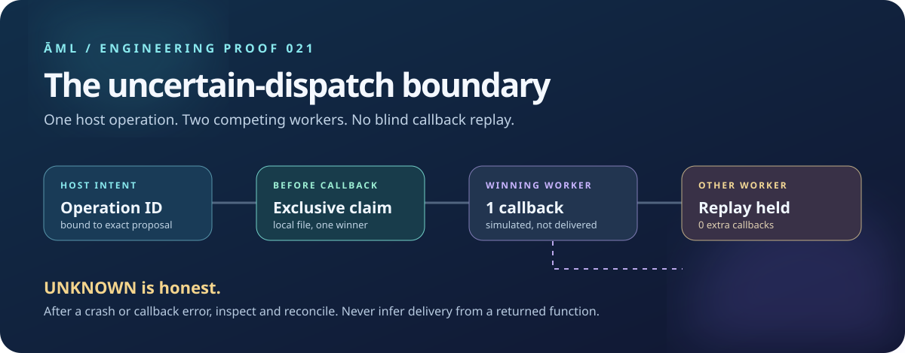

SELECTED TRACE / —
Loading…
Reading project-maintained report.
OPERATION RESULT—
SIMULATED CALLBACKS—
AUTOMATIC RETRIES0
No result yet.
Inspect this exact report row
—
An approval can be legitimate and a callback can still time out after a side effect. This local ledger claims a host operation ID before the callback, binds it to the exact proposal, and leaves uncertainty visible instead of blindly replaying.
Project-maintained simulation, not live payment, message delivery, human approval, external certification, or a distributed exactly-once guarantee. The host owns the ID, private storage, policy, and reconciliation.

The banner illustrates a local two-process test. The recorded outcome below is regenerated in CI.
Change scenarios to see what the ledger knows—and what it cannot know—after concurrent attempts, changed arguments, or a lost process.
Reading project-maintained report.
—
The demo starts two Node child processes, writes only simulated callbacks to a temporary file, and exits another worker immediately after a durable claim.
node pilots/action-boundary/file-dispatch-ledger-demo.mjsCheck that the recorded six-scenario JSON still matches a fresh run:
node scripts/build-file-dispatch-report.mjs --checkA callback returning is not proof that an email arrived or a charge settled. A claim without an outcome may mean no callback ran—or that a process vanished after an effect. The host must inspect the outside system before deciding on a new operation.
Compare established operation-key behavior in Stripe’s API and AWS EC2. This ĀML pilot makes a narrower local claim.